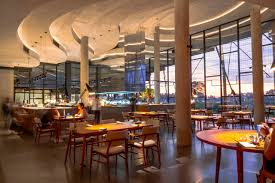
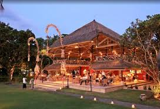
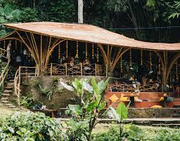

Nikmati cita rasa eksotis Bali yang menggoda, dari masakan tradisional yang otentik hingga hidangan modern dengan pemandangan tropis yang menakjubkan.

★★★★★ · Ubud
Restoran fine dining yang menyajikan konsep “farm to table” dengan bahan lokal segar. Dikenal di dunia internasional sebagai destinasi kuliner yang menghadirkan inovasi modern dengan sentuhan budaya Bali.
Lihat restoran
★★★★★ · Seminyak
Terletak di tepi pantai Seminyak, La Lucciola menyuguhkan suasana romantis dengan pemandangan laut yang memukau. Hidangan Italia yang autentik dan pelayanan hangat menjadikannya tempat favorit wisatawan.
Lihat restoran
★★★★☆ · Ubud
Restoran ramah lingkungan dengan desain bambu yang memikat. Menyajikan masakan khas Bali dan Asia dengan bahan organik dari kebun sendiri, menciptakan pengalaman makan yang sehat dan alami.
Lihat restoranDari restoran mewah hingga warung tradisional, setiap hidangan Bali membawa cerita dan cita rasa yang tak terlupakan.
Lihat Semua dari Bali